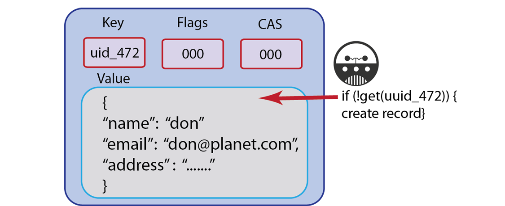
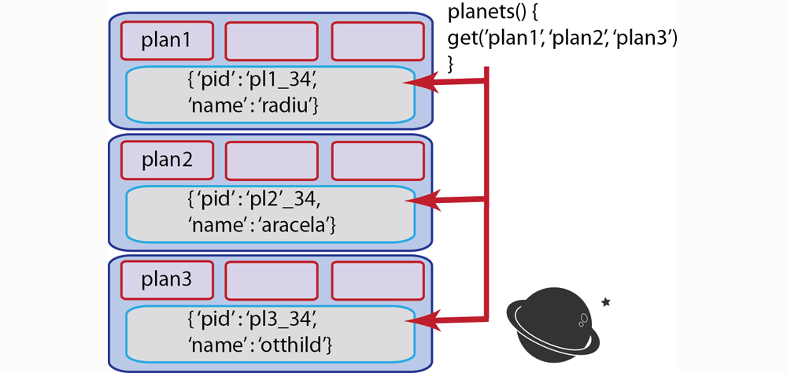
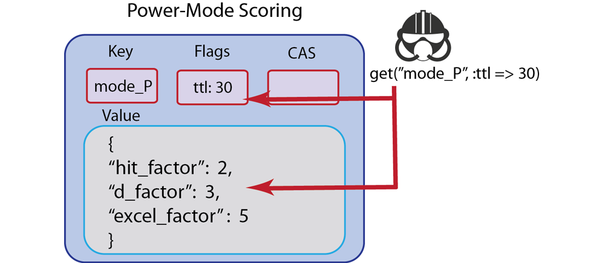

Retrieving information
These operations are used for retrieving information from Couchbase and exist for all SDKs provided by Couchbase. They include get, performing a multiple-retrieve, get-and-touch, and get-with-CAS. They enable you to retrieve individual items of information, retrieve data as a collection of documents, retrieve data while updating the expiration date for the data, and retrieving a value and the CAS value for document.
For more information about connections and connection-level settings, see Optimizing client instances and Client-side timeouts.
Get
You can use this operation for a document you want to change, or for a document you want to read, but not necessarily update or edit. In this first scenario where you want to change a value, you would perform a get and assign the value that Couchbase returns to a variable. After you change the value of the variable, you would store the new value to Couchbase Server with one of the store or update methods: set, add, replace or for optimistic concurrency, cas. For instance, following our example of a spaceship game, the case of spaceship fuel is a scenario where you will probably constantly change fuel level with player interaction. In this case, you could perform a retrieve, update and then store.
There are also cases where you could use get to retrieve a value, but only as a read-only operation. An example of when you do want to read in the value but not change the value is if you have a game with player profiles. Imagine you have documents that represent different users and their attributes. The user profile are part of the player experience, but game play does not change the profile or their properties, such as contact information. In this case, we perform get to retrieve and display a play profile.
A related scenario is when we use a get to determine if a key exists, and if it does not exist, perform some action. For instance, if a player creates a user profile, we could try to read in the player profile with get, and if it does not exist, we can create the new profile including information such as the player email address:
Developers who are starting with Couchbase Server will rely heavily on get/set requests to do all of their read and write operations. The majority of the time, get/set operations are the most useful Couchbase methods for your application.
Over time, developers discover other Couchbase methods, and the benefits to using alternative read/write operations in their application logic. One advantage is that applications in multi-user environments may inadvertently overwrite the latest key you retrieve using only get/set, therefore in a multi-user environment you might not be able to always rely on that value being valid and current if you plan to perform operations on it after the get. In this case, there are alternate methods, such as get-with-cas and cas that can provide optimistic concurrency.
There is one problem you can encounter if you use get to make sure that a key exists before they perform some operation. This can cause problems if the value for a key is large and can result in slower application performance. An alternate, more efficient way to test if a key exists, without retrieving the whole key, is to use touch, which only updates the expiration, but does not retrieve the whole value. Even this approach has a drawback; you can use touch to determine the key exists, but you will be working on the assumption that the item does not expire by the time you perform your next operation on it.
The other important assumption you are making when you use this approach is that when you touch to test for existence of an item, you must overwrite the TTL at the same time. If you know an item does not have an expiration, then you can use the touch approach as a workaround. If your application depends on the item expiration, you should not use the touch approach because this would overwrite your expiration.
Finally, if you use get make sure you are aware of the value size, and how many times you are repeatedly performing the operation. There may be alternate convenience methods which can handle your task with a less resource-consuming request.
The simplest case of retrieving information is by using get with a single key. Here is an example in Ruby:
c.get("foo")
The following PHP example demonstrates use of get to retrieve a user password from Couchbase Server and compare it to a password provided in a web form:
$submitted_passwordHash = sha1($password);
$db_passwordHash = $cb_obj -> get($userid_key);
if($db_passwordHash == false) {
return (false);
}
//do we match the password?
if($db_passwordHash == $submitted_passwordHash) {
$_SESSION{"userid"} = $userid;
return true;
} else {
return false;
}
In this case we perform $userid_key and $password are based on parameters a user provides in a web form. We perform a get with $userid_key to retrieve the user password which is stored in Couchbase Server. If the password provided in the form matches the password in Couchbase Server, we create a new user session, otherwise we return false.
The memcached protocol which relate to this method are get and getk. These first is the operation for retrieving an item; the later is for getting the value and the key. For more information about memcached protocol, see memcached protocol.
If a key does not exist, you will receive a ‘key not found’ type error as a response to get. If you expected the key to actually exist, you should check your application logic to see why it does not exist. Any logic that creates that type of key, or any logic that deletes it may inadvertently cause this result. Another reason why you might get this error is that the item expired; in this case Couchbase Server will respond to the request with a ‘key not found’ error. So you will also want to check any explicit expiration set for that key.
In the case where you use a get to determine if key does not exist and then store it, you can attempt a set or add to create the key.
The types of errors that can occur during this operation include 1) inability to connect to a node, or 2) some error exists while attempting to format a value being retrieved. If you have a connection-level error you may need to reattempt connection, and possibly check the status of the server. If you have an error with the size of your value or formatting, you need to check the value itself, and how it is encoded and see if there are any issues that make the document incompatible with Couchbase Server.
There are variations for parameters used in the get depending on the SDK. For instance, some SDKs, such as the one for Java, support providing a transcoder that will manipulate a value after it retrieves it (for instance, remove and replace underscores with spaces.) Refer to an individual SDK’s API documentation for more information.
Retrieving multiple keys
In the case of our spaceship game example, we create space environment which contains multiple planets and discussed how we could use get to retrieve documents that represent the planets. In reality if we want to retrieve more than one document, and do so efficiently, we would use one of the forms bulk-retrieves. This enables us to send a single request from our SDK for all the keys we want to retrieve.
Developers that are new to Couchbase Server tend to heavily rely on get to retrieve values, even sets of values. However, using a form of multiple-retrieve may be a better approach if you are doing multiple retrievals.
The major advantages of using a multiple-retrieve is that you can make a single request to Couchbase Server from an SDK. The alternate you could choose is to make multiple, sequential get requests and your application needs to wait for the SDK to make each of these requests. This approach has the performance disadvantage of creating a separate request that Couchbase Server must then individually respond to. For instance if you want to retrieve 100 keys, you could do this as a multiple-retrieve and all keys could be retrieved in 1 millisecond. If you chose to do 100 get calls, this would take the equivalent of 100 milliseconds. In short, if you are retrieving multiple keys, performing a multiple-retrieve will improve application performance compared to performing a regular get.
Using a multiple-retrieve is particularly suited in cases where you have ‘object-graphs’ in your application. An object graph exists in your data model when you have one primary, ‘root’ object and that object owns or links-to several other objects. For instance, a farm can have several farm animals; or a solar system can have several planets. In the case of a solar system, you could have one JSON document represent the solar system, and that document references the planets in the solar system. You could then use a form of multiple-retrieve to construction the solar system in your application:
There are other cases where you have multiple objects related to a process and it would be better to use indexing and querying with views instead of a multiple-retrieve. These are typically cases where you do not have a relationship of ownership/possession by a root object. For instance in the case of a game leader board, individual user documents do not necessarily relate to the leader board object; only user documents with a high scores should be retrieved and displayed for a leader board. In this type of scenario, it is a better alternative to do indexing and querying with views in order to find the top score holders. For more information, see Finding data with views.
This example demonstrates how to retrieve multiple keys, using different method overloads in Ruby:
keys = ["foo", "bar","baz"]
// alternate method signatures for multiple-retrieve
conn.get(keys)
conn.get(["foo", "bar", "baz"])
conn.get("foo", "bar", "baz")
In this case, we can overload the standard get method signature to include several keys.
In the case of other languages, such as Java, there is a separate method, called getBulk which will retrieve keys provided in a string collection:
Map<String,Object> keyvalues = client.getBulk(keylist);
There are some cases where you want to perform a multiple-retrieve but you know the operation will take longer than a user will want to wait, or you want to perform the operation in the background while the application performs other tasks. In a spaceship game, for instance, you want to retrieve all the profiles of users who have a high score to display in a leader board. But in the meantime, you want players to be able to continue playing their game.
In this case, you can perform a multiple-retrieve asynchronously. When you do so, multiple-retrieve will return before the SDK sends a request to Couchbase Server. Your game application continues for the player and they can play their game. In the background, Couchbase Server retrieves all the specified keys that exist and sends these documents to the client SDK. Your application can later retrieve the documents if they exist, or perform error-handling if the documents do not exist. The following demonstrates an asynchronous multiple-retrieve in PHP:
$cb->set('int', 99);
$cb->set('string', 'a simple string');
$cb->set('array', array(11, 12));
$cb->getDelayed(array('int', 'array'), true);
var_dump($cb->fetchAll());
In this case getDelayed returns immediately and we retrieve all the keys later by performing fetchAll.
The multiple-retrieve methods in Couchbase SDKs are based on sending multiple getq in the memcached protocol in a single binary packet.
When you do a multiple-retrieve, be aware that the method will return values for the keys that exist. If a key does not exist, Couchbase Server returns a ‘key not found’ error which the SDK interprets. If a key is missing, SDK do not provide a placeholder in the result set for the missing key. Therefore do not assume that the order of results will be the same as the order of the keys you provide. If your application depends on all keys existing and being retrieved, you should provide application logic that iterates through the results and checks to see the number results matches the number of keys. You might also want to provide logic that sorts the results so they map to your sequence of keys.
If you expected a key to actually exist, but it does not appear in a result set, you should check your application logic to see why it does not exist. Any logic that creates that type of key, or any logic that deletes it may inadvertently cause this result. Another reason why you might get this result is that the item expired and Couchbase Server returns a ‘key not found’ error. So you will want to check any explicit expiration set for that key.
One option to handle this result is to create the value if it does not already exist. After you receive this result you can attempt a set or add to create the key.
The types of errors that can occur during this operation include 1) inability to connect to a node, or 2) some error exists while attempting to format values being retrieved. If you have a connection-level error you may need to reattempt connection, and possibly check the status of the server. If you have an error with the size of your value or formatting, you need to check the value itself, and how it is encoded and see if there are any issues that make the document incompatible with Couchbase Server.
Get and touch
When you perform a get you may also want to update the expiration for that document. This is called a ‘get-and-touch’ operation and can be completed in a single request to Couchbase Server. This saves you the time from having to do a get and then a separate operation to update the expiration. This method is useful for scenarios where you have a document that should eventually expire, but perhaps you want to keep that document around when it is still in use by the application. Therefore when you retrieve the document, you also update the expiration so it will be in Couchbase Server for a bit longer.
Going back to our spaceship game example, imagine that we have a special mode that a player can achieve. For instance, if they hit a special target they have temporary powers and can score more points for the next 30 seconds of play.
In this case, you could represent this temporary play mode as a document named username_power_up_mode for instance. The document could have attributes related to this special play mode, such as double-points or triple-point scoring. Since the special play mode will only last 30 seconds, when you get the power_up_mode document you could also update the expiration so that it will also only exist for the next 30 seconds. To do this, you would perform a get-and-touch operation.
If you need to constantly retrieve a document and update it to keep it stored longer, this method will also improve your application performance, when you compare it to using separate get and touch calls. When you use the separate calls, you effectively double the number of requests and responses between your application and Couchbase Server, thereby increasing response and request times and decreasing application performance. Therefore get-and-touch is preferable for heavy retrieve operations where you also want to update document expiration.
The next example demonstrates a get-and-touch in Ruby:
val = c.get("foo", :ttl => 10)
The Couchbase SDK get-and-touch methods are based on the memcached protocol command get with a specified expiration. For more information about the protocol, see memcached protocol.
If a key does not exist, you will get a ‘key does not exist’ type error in response. If you did not expect this result, you should check any application logic that creates that type of key, or any logic that deletes it may inadvertently cause this result. Another reason why you might get this result is that the item expired and Couchbase Server returns a ‘key not found.’ So you will want to check any explicit expiration set for that key.
One option to handle this result is to create the value and set the new expiration; you can attempt this with set or add.
The types of errors that can occur during this operation include 1) inability to connect to a node, or 2) some error exists while attempting to format a value being retrieved. If you have a connection-level error you may need to reattempt connection, and possibly check the status of the server. If you have an error with the size of your value or formatting, you need to check the value itself, and how it is encoded and see if there are any issues that make the document incompatible with Couchbase Server.